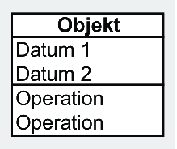
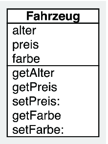
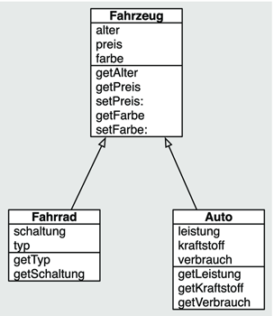
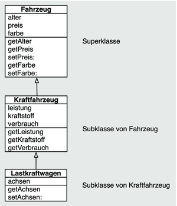
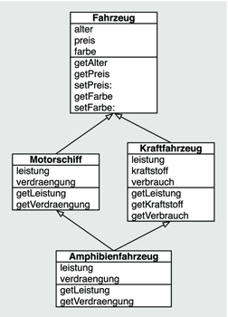

Zum Online-Shop
Zum Online-Shop
1.5 Objektorientierte Programmierung
Um saubere Cocoa-Touch-Programme erstellen zu können, müssen Sie sich mit der objektorientierten Programmierung vertraut machen. Daher finden Sie in diesem Abschnitt einen Überblick über die wichtigsten Begriffe, ohne deren Kenntnis Sie sich leicht in der Dokumentation und der Klassenhierarchie verirren können.
Bei der objektorientierten Programmierung fasst der Entwickler die Daten und die Operationen, die mit diesen Daten durchgeführt werden können, in Objekten zusammen. Im Gegensatz dazu verbindet man bei der prozeduralen Programmierung die Daten und Operationen nicht fest miteinander. Auf der einen Seite gibt es Daten, und auf der anderen Seite gibt es Instruktionen, die diese Daten verarbeiten. Die folgende Funktion computeAge erhält als Eingabeparameter ein Datum als Zahl und berechnet daraus das Alter:
int computeAge(long inDate) {
// lots of magic stuff here
return theAge;
}
Wie die Funktion aus der einen Zahl die andere berechnet, ist an dieser Stelle nicht so wichtig. Es kann über alle möglichen Anweisungen geschehen, die die Programmiersprache zulässt. Mit welchen Daten der Programmierer die Funktion aufruft, ist ihm freigestellt. Es gibt keinen Mechanismus, der beispielsweise einen Aufruf mit einer Längenangabe oder einer Gewichtsangabe verhindert. In diesem Fall liefert die Funktion höchstwahrscheinlich einen unsinnigen Wert zurück. Die Verantwortung für die sinnvolle Verwendung der Funktion und der Daten trägt allein der Programmierer. Er erhält dabei kaum Unterstützung vom Compiler, der ihn nicht vor solchen Fehlern warnen kann.
Bei kleinen Programmen, an denen ein einzelner Entwickler arbeitet und über die er den Überblick behält, ist das noch kein besonders großes Problem. Bei größeren Softwareprojekten, die neben eigenem Code auch Module und Bibliotheken anderer Programmierer einsetzen, besteht eine große Gefahr, Operationen mit unpassenden Daten zu kombinieren. Der Compiler bewahrt den Programmierer zwar davor, Operationen mit unpassend typisierten Daten auszuführen, aber nicht vor Operationen mit logisch unpassenden Daten.
Hier ist noch ein Beispiel für den logisch falschen, syntaktisch hingegen korrekten Umgang mit einem Datum. Ein Verkaufsprogramm von Autos enthält den selbst definierten Datentyp fahrzeug. Das Programm stellt ihn über eine C-Struktur dar. Er enthält verschiedene Attribute, die die Eigenschaften des Fahrzeugs repräsentieren – also beispielsweise Farbe, Alter, Preis und Art des Fahrzeugs:
struct fahrzeug {
int alter;
int preis;
char farbe[10];
...
}
Der Datentyp fahrzeug enthält nun zwar alle im Programm benötigten Eigenschaften eines Fahrzeugs, legt aber deren korrekte Verwendung nicht fest. Dem Programmierer steht es frei, sämtliche Eigenschaften so zu ändern, wie es der Compiler zulässt. Überschreibt er im Programmverlauf aus Versehen oder auch mit Absicht das Attribut alter, macht der Compiler ihn nicht darauf aufmerksam. Die Zuweisung fahrzeug.alter = 1; ist syntaktisch korrekt. Der Compiler erkennt keinen Fehler, das Programm wird nicht abstürzen oder ein anderes Fehlverhalten aufweisen. Es wird lediglich den Verkäufer dieses Fahrzeugs erfreuen, dass sein Fahrzeug auf seltsame Art und Weise eine Verjüngungskur und damit eine implizite Wertsteigerung erfahren hat – vorausgesetzt, das Fahrzeug war vorher älter.
Die zunehmende Komplexität von Software machte daher ein neues Paradigma notwendig, eine neue Art zu programmieren, um sinnvoll und sicher mit Daten umgehen zu können. Denn insbesondere bei verteilter Programmierung verlieren selbst erfahrene Programmierer schnell den Überblick, welche Operationen mit welchen Daten möglich und erlaubt sind.
Überdies ist es enorm schwierig, Code wiederzuverwenden, der aus getrennten Daten und Operationen besteht. Im vorliegenden Beispiel könnte ein Programmierer lediglich den Datentyp fahrzeug und einige Funktionen in ein eigenes Programm übernehmen, was aber häufig auch noch einen hohen Anpassungsaufwand erfordert.
Aus dieser Problematik hat sich die objektorientierte Programmierung entwickelt, die Daten fest mit den auf ihnen zulässigen Operationen zu Objekten verknüpft. Als erste objektorientierte Programmiersprache gilt Simula, die Dahl und Nygaard Anfang der 1960er-Jahre in Norwegen entwickelt haben. In den 1970er-Jahren haben Kay, Ingalls und Goldberg die Programmiersprache Smalltalk-80 bei der Firma Xerox im Palo Alto Research Center entwickelt. Sie gilt als die erste einsetzbare objektorientierte Programmiersprache, und viele Programmierer verwenden sie auch noch heutzutage. Objektorientierte Programmierung ist also auf dem Zeitstrahl der IT-Geschichte bereits ein alter Hut.
Die objektorientierte Programmierung basiert auf den vier Paradigmen Message Passing, Kapselung, Vererbung und Polymorphie. Dem Problem des ungeregelten Zugriffs auf Daten begegnet die objektorientierte Programmierung durch die Kapselung der Daten. Dahinter verbirgt sich, dass ein objektorientiertes Programm nicht mehr aus Funktionen und davon losgelösten Daten besteht, sondern aus Objekten. Diese Objekte repräsentieren Einheiten aus Daten und Operationen, die mit diesen Daten möglich sind. Diese Operationen sind in den Objekten selber enthalten und das wiederum bedeutet, dass Daten und Code fest miteinander verbunden sind.
1.5.1 Objekte
In vielen objektorientierten Sprachen beschreiben Klassen die möglichen Objekte. Die zu einem Objekt gehörenden Daten bezeichnet man (siehe Abschnitt 1.5.4, »Objective-C«) als Attribute und die Operationen als Methoden. Attribute definieren den Zustand eines Objektes, die Methoden das Verhalten. Ein Objekt ist also die Zusammenfassung aus Zustand und Verhalten. Es erleichtert in vielen Fällen den Einstieg in die objektorientierte Programmierung, wenn Sie die Programm-Objekte als Entsprechungen von Objekten in der Realität betrachten. Das geht in der Regel sehr gut bei den Objekten des Modells: Das ist eine Schicht des MVC-Musters, das Sie später noch genauer kennenlernen. Bei der oben beschriebenen Fahrzeugverwaltung würde ein Objekt der Klasse Fahrzeug beispielsweise zu den Modellobjekten gehören. Diesem Objekt entspricht in der Regel ein echtes Fahrzeug auf dem Hof des Händlers. Aber nicht jedes Objekt muss eine Entsprechung in der Realität haben.
Abbildung 1.12 Ein Objekt mit Attributen und Methoden
Die Klasse Fahrzeug beschreibt alle Attribute und Methoden der Fahrzeugobjekte. Aber nur die Methoden haben Zugriff auf die Attribute. Von außerhalb des Objektes ist kein direkter Zugriff auf die im Objekt gespeicherten Daten in den Attributen möglich. Den Zugriff darauf stellt also das Objekt nur über seine Methoden bereit.
Abbildung 1.13 Die Klasse »Fahrzeug« mit Methoden und Attributen
Für das Abrufen des Alters stellt das Objekt beispielsweise die Methode alter zur Verfügung. Diese liefert auf Anfrage das Alter des Fahrzeugs zurück. Ein versehentliches oder unbefugtes Überschreiben des Alters des Fahrzeugs ist nicht möglich – dafür stellt das Objekt gar keine Methode bereit. Der Aufruf einer Methode ähnelt dem Senden einer Nachricht an einen Empfänger, weshalb dafür auch die Bezeichnung Message Passing verwendet wird. Das Objekt, dessen Methode aufgerufen wird, wird auch als Empfänger und die Methode als Nachricht bezeichnet.
Eine Methode, die nur einen einzelnen Attributwert eines Objektes ausliest oder verändert, nennt man häufig auch Getter (lesender Zugriff) oder Setter (schreibender Zugriff). Ein anderer Begriff für eine Setter-Methode ist Mutator-Methode.
Die Begriffe Klasse und Objekt dürfen Sie nicht miteinander verwechseln. Die Klasse ist der Bauplan eines Objektes, und ein Objekt ist eine Ausprägung einer Klasse. Das Programm erzeugt die Objekte zur Laufzeit, wobei die Klasse die Eigenschaften des Objektes definiert. Auf das Beispiel bezogen bedeutet das: Für die Fahrzeugverwaltung haben deren Entwickler die Klasse Fahrzeug programmiert. Der Autohändler erstellt hingegen ein neues Fahrzeugobjekt, wenn er den Duesenberg SJ von 1933 in die Fahrzeugverwaltung aufnimmt.
1.5.2 Vererbung
Ein weiteres wichtiges Merkmal objektorientierter Programmierung ist die Möglichkeit der Vererbung. Die Wiederverwendbarkeit von Code ist im Laufe der Zeit immer wichtiger geworden. Software wird immer umfangreicher, und es ist mittlerweile nahezu unmöglich, alle Funktionen eines Programms mit zeitgemäßem Layout und Funktionen selber zu schreiben. Stattdessen verwendet man Bibliotheken und Frameworks (z. B. Cocoa Touch), die eine Grundlage für eigene Programme bieten. Natürlich findet sich nicht für jede Anforderung eine Lösung in einem Framework. Aber in den meisten Fällen gibt es mit hoher Wahrscheinlichkeit zumindest eine ansatzweise Lösung. Über die Vererbung bietet die objektorientierte Programmierung eine einfache Möglichkeit, vorhandene Funktionalitäten zu erweitern und auf diese Weise an die eigenen Anforderungen anzupassen.
Um beim Beispiel des Objektes Fahrzeug zu bleiben, käme Vererbung dann ins Spiel, wenn nicht mehr nur Fahrzeuge allgemein betrachtet werden, sondern auch spezialisierte Formen von Fahrzeugen wie beispielsweise Autos, Fahrräder, Eisenbahnen. In diesem Fall bietet die Klasse Fahrzeug zwar einige grundlegende Attribute und Methoden, ist aber kaum dazu geeignet, die speziellen Attribute der jeweiligen Sonderformen von Fahrzeugen zu beschreiben. Dieses Problem lässt sich durch Vererbung lösen. Sie erlaubt eine hierarchische Verknüpfung zwischen Klassen (siehe Abbildung 1.14). Dabei erben jeweils die Klassen alle Attribute und Methoden der Klassen, auf die der ausgehende Pfeil zeigt. Die vererbende Klasse heißt dabei Ober- oder Superklasse, die erbende Klasse ist entsprechend die Unter- oder Subklasse.
Die Subklasse erbt alle Eigenschaften ihrer Superklasse und kann diese überschreiben oder neue Eigenschaften hinzufügen. Durch das Erben verfügt also die Subklasse automatisch über alle Eigenschaften ihrer Superklasse. Im vorliegenden Beispiel lassen sich von der Superklasse Fahrzeug beliebig viele Subklassen ableiten. Sie besitzen alle die Eigenschaften von Fahrzeug, können aber neue Eigenschaften hinzufügen, um die jeweiligen Fahrzeuge präziser beschreiben zu können. Als Beispiel zeigt Abbildung 1.14 die von der Superklasse Fahrzeug abgeleiteten Subklassen Fahrrad und Auto. Die Superklasse Fahrzeug enthält bereits einige Attribute und Methoden, die für die Beschreibung eines generischen Fahrzeugs sinnvoll sind. Um weiter spezialisierte Fahrzeuge zu beschreiben, reichen diese Attribute und Methoden allerdings nicht aus. Die beiden Subklassen Fahrrad und Auto bieten daher alle Attribute und Methoden der Klasse Fahrzeug und darüber hinaus auch noch weitere Attribute und Methoden, die für die Beschreibung der jeweiligen Klassen notwendig sind. Bei einem Auto sind sicherlich die Leistung und insbesondere der Verbrauch von Interesse, die aber bei einem Fahrrad keine Rolle spielen. Da ist es eher wichtig, ob das Fahrrad eine Ketten- oder eine Nabenschaltung hat.
Die obersten Superklassen innerhalb einer Klassenhierarchie sind daher immer die kleinsten gemeinsamen Nenner aller Klassen ihrer Hierarchie. Diese Klassen nennt man auch Wurzelklassen. Die wichtigste Wurzelklasse in Cocoa Touch ist die Klasse NSObject, von der sich fast alle anderen Cocoa-Klassen ableiten. Vererbung ist ein mächtiges Werkzeug für die Wiederverwendung von Code, da sie es dem Programmierer erlaubt, die Funktionalitäten vorhandener Klassen ohne großen Aufwand zu verwenden und zu erweitern. Im Gegensatz zu vielen anderen objektorientierten Sprachen verwendet aber Cocoa noch andere Möglichkeiten, um Klassen zu erweitern und das Verhalten von Methoden zu beeinflussen.
Abbildung 1.14 Superklasse und Subklassen
Die Subklasse kann die von der Superklasse ererbten Attribute und Methoden übernehmen oder überschreiben. Ererbte und nicht überschriebene Eigenschaften verwenden dabei die Implementierung der Superklasse. Bei der Programmierung mit Objective-C kann eine Klasse nur von einer Superklasse erben – im Gegensatz zu C++, wo Klassen von mehreren Superklassen erben können (Mehrfachvererbung). Dabei unterscheidet sich die Mehrfachvererbung durch das gleichzeitige Erben von hierarchisch gleichberechtigten Superklassen von der Einfachvererbung über mehrere Hierarchieebenen, die das Ererben von Eigenschaften verschiedener, hierarchisch geschachtelter Superklassen darstellt. Abbildung 1.15 zeigt das Prinzip der Einfachvererbung über drei Ebenen. Die Superklasse Fahrzeug vererbt ihre Eigenschaften an ihre Subklasse Kraftfahrzeug, die wiederum ihre Eigenschaften an ihre Subklasse Lastkraftwagen vererbt. Diese Klasse besitzt somit alle Eigenschaften der Klassen Fahrzeug und Kraftfahrzeug. Das ist aber keine Mehrfachvererbung, sondern einfach das Erben über verschiedene Hierarchieebenen hinweg. Fahrzeug ist in dem Fall nur die direkte Superklasse von Kraftfahrzeug, nicht aber von Lastkraftwagen.
Abbildung 1.15 Vererbung über drei Ebenen
Im Gegensatz dazu bedeutet Mehrfachvererbung, dass eine Subklasse mehrere Superklassen besitzen kann, die sich auf derselben Hierarchieebene befinden können. Abbildung 1.16 veranschaulicht dieses Prinzip anhand der Klassen Motorschiff und Kraftfahrzeug, die beide direkte Superklassen von Amphibienfahrzeug sind. Das Ergebnis ist scheinbar das gleiche wie bei der hierarchischen Vererbung über mehrere Ebenen, beruht aber auf einem anderen Prinzip und wird schnell unübersichtlich.
Abbildung 1.16 Mehrfachvererbung
Insbesondere kann es vorkommen, dass eine Klasse über verschiedene Wege Eigenschaften einer einzigen Superklasse erbt. Das ist das sogenannte Diamond-Problem. Es heißt so, weil die Vererbungspfeile im Klassendiagramm häufig eine Raute bilden, wie das Abbildung 1.16 zeigt. Bei einem Objekt der Klasse Amphibienfahrzeug besteht in diesem Beispiel das Problem, welches Attribut es für z. B. für alter verwenden soll.
In der Praxis ist die Mehrfachvererbung auch in der Regel nicht notwendig. Daher hat sich Mehrfachvererbung auch nicht durchsetzen können, und außer Objective-C verzichten die meisten anderen objektorientierten Programmiersprachen wie C# und Java auf Mehrfachvererbung.
1.5.3 Nachrichten
In der objektorientierten Programmierung findet der Programmfluss durch den Austausch von Nachrichten – den Aufruf von Methoden – zwischen Objekten statt. Es gibt keine Funktionen, die mit entsprechenden Parametern aufgerufen werden, sondern Objekte, die über Methoden miteinander kommunizieren. Diese Kommunikation zwischen Objekten ist das Paradigma des Nachrichtenaustauschs oder auch Message Passings. Ein Objekt sendet eine Nachricht an ein anderes Objekt.
Beim Versenden von Methoden kommt das dritte wichtige Merkmal der objektorientierten Programmierung zum Tragen – die Polymorphie. Polymorphie erlaubt es unterschiedliche Methoden gleich zu benennen. Das kann sowohl innerhalb von Vererbungslinien als auch außerhalb stattfinden.
Die in Abbildung 1.14 gezeigten Beispiele besitzen alle drei Klassen Methoden mit den gleichen Namen: getAlter, getPreis, setPreis:, getFarbe, setFarbe:. Die Subklassen von Fahrzeug können diese Methoden überschreiben und die Implementierungen der Superklasse durch eigene Implementierungen ersetzen. Die Polymorphie stellt sicher, dass das Programm immer die richtige Methode aufruft. Wenn es eine Nachricht an ein Objekt sendet, wählt das Laufzeitsystem die passende Methodenimplementierung aus. Dabei reicht für den Nachrichtenversand der Methodenname aus. Da das Programm erst zur Laufzeit die Methodenimplementierung ermittelt – also sie erst dann an den Aufruf bindet, bezeichnet man dieses Verfahren auch als dynamisches Binden. Im Gegensatz dazu verknüpft beispielsweise Xcode bei der Programmerstellung die verwendeten C-Funktionen fest mit ihrem Aufruf. Dieses Vorgehen heißt statisches Binden, weil es bereits zur Kompilierzeit erfolgt. Zur Laufzeit ruft das Programm für den Funktionsaufruf immer das gleiche Codefragment auf.
Wie also genau ein Objekt auf eine Nachricht reagiert, entscheidet sich bei Objective-C immer erst zur Laufzeit des Programms und nicht zum Zeitpunkt des Kompilierens. Dabei können Sie in Objective-C die Polymorphie und das dynamische Binden nicht innerhalb von Objekten der jeweiligen Vererbungslinien verwenden, sondern auch kreuz und quer durch die gesamte Klassenhierarchie. Sie können in Objective-C jede Methode an jedes beliebige Objekt senden, da diese Programmiersprache zwischen dem Versenden und dem Empfangen von Nachrichten unterscheidet. Die Klasse des Objekts entscheidet, ob eine empfangene Methode verarbeitet werden kann oder ob ein Fehler vorliegt. Dabei können Sie in den Klassen auch eine Methode implementieren, die auf Nachrichten reagiert, für die die Klasse keine Implementierung bereitstellt.
1.5.4 Objective-C
Die Programmiersprache für iOS und Cocoa Touch ist Objective-C. Objective-C ist eine objektorientierte Erweiterung von ANSI-C und war schon unter NEXTSTEP und Mac OS X die Programmiersprache der Wahl. Tim Berners-Lee hat den ersten Webbrowser und -server unter NEXTSTEP in Objective-C programmiert und damit Referenzimplementierungen des von ihm erfundenen WWW erstellt.
Im Zuge des Vormarschs objektorientierter Programmierung wurden in den 80er-Jahren auf Basis der rein prozeduralen Programmiersprache C zwei objektorientierte Varianten entwickelt. Die eine Variante, C with classes, ist später unter dem Namen C++ bekannt geworden. C++ war lange Zeit die Standardsprache in der Programmierung unter Windows, bevor sich für die Anwendungsentwicklung .NET als ernst zu nehmende Alternative entwickelt hat. Es hat sich aber auch dank der GNU Compiler Collection (GCC) und in Form vieler proprietärer Compiler auf vielen UNIX-basierten Systemen verbreitet.
Parallel dazu hat sich Objective-C als weitere objektorientierte Sprache entwickelt, die auf C aufbaut. Dabei erweitert Objective-C im Gegensatz zu C++ den Sprachumfang von C, ohne ihn zu verändern, sodass C-Programme auch immer von einem Objective-C-Compiler übersetzt werden können. Die wichtigsten syntaktischen Erweiterungen sind Klassen und Methodenaufrufe.
Von den im vorstehenden Abschnitt beschriebenen Eigenschaften objektorientierter Programmierung besitzt Objective-C alle vier grundlegenden Merkmale und verwendet ausschließlich dynamisches Binden. Attribute heißen auch Objekt- oder Instanzvariablen. Der Zugriff auf die Attribute eines Objekts sollte nur über die Methoden des Objekts möglich sein. Der direkte Zugriff von außen ist zwar prinzipiell möglich, wenn Sie ihn explizit freigeben. Sie sollten das aber grundsätzlich vermeiden, da es ein eklatanter Verstoß gegen das Paradigma der Datenkapselung wäre.
Ein Klasse in Objective-C dient auch dort als Blaupause für Objekte. Sie sind aber auch selber Objekte – sogenannte Klassenobjekte. Ein Klassenobjekt repräsentiert seine Klasse und verfügt über Methoden. Es kann also Nachrichten empfangen. Auch das Binden dieser Klassenmethoden erfolgt im Gegensatz zu vielen anderen objektorientierten Sprachen erst zur Laufzeit.
Das Erzeugen eines neuen Objekts einer bestimmten Klasse geschieht über das Versenden einer Nachricht an das betreffende Klassenobjekt, ein neues Objekt seiner Klasse zu erzeugen. Die Klassenobjekte erzeugt das Laufzeitsystem beim Programmstart. Außerdem kann Objective-C aber auch noch Klassenobjekte zur Laufzeit erzeugen. Davon bekommen Sie aber in der Regel nicht viel mit.
Objective-C verwendet im Umgang mit den von C übernommenen Datentypen dieselbe Typisierung wie C – statisch, schwach und explizit. Sie ist statisch, da der Typ einer Variablen schon zur Übersetzungszeit feststeht. Implizite und explizite Typumwandlung sind möglich, können aber sowohl in C als auch in Objective-C mitunter zu Fehlern führen. Aus diesem Grund bezeichnet man die Typsysteme der beiden Sprachen als schwach, da sie zur Laufzeit Typen nicht immer richtig konvertieren.
Darüber hinaus bietet Objective-C für Objekte das Konzept der dynamischen Typisierung. Hierfür existiert der Datentyp id, der einen Zeiger auf ein beliebiges Objekt repräsentiert. Er ist dabei unabhängig davon, zu welcher Klasse das Objekt gehört. Sie können jedes Objekt einer Variablen vom Typ id zuweisen und umgekehrt jeder Variablen einer bestimmten Klasse einen id-Wert. Bei Letzterem müssen Sie natürlich sicherstellen, dass das zugewiesene Objekt und die Klasse der Variablen zueinander passen. Dazu ein paar Beispiele:
id theString = @"12345"; // OK, NSString -> id
NSString *theText = theString; // OK, NSString -> NSString
NSNumber *theValue = theString; // logischer Fehler
char theCharacter = [theValue charValue]; // Laufzeitfehler
Listing 1.1 Typzuweisungen mit »id«
Alle vier Anweisungen in Listing 1.1 führen nicht zu einem Übersetzungsfehler, aber nur die beiden ersten sind unproblematisch. Die dritte Zuweisung führt zu keinem Laufzeitfehler, obwohl eine Variable für numerische Objekte eine Zeichenkette zugewiesen bekommt. Erst wenn das Programm, wie in der letzten Zeile, eine unbekannte Nachricht an das Objekt sendet, kommt es zu einem Laufzeitfehler, da die Klasse NSString die Methode charValue nicht implementiert.
Sie können an id-Werte jede beliebige Nachricht senden. Einen Laufzeitfehler wie in Listing 1.1 können Sie also auch einfach durch [theString charValue] erzeugen. Falls Sie dabei einen unbekannten Methodennamen verwenden, verwendet Objective-C immer id als Rückgabetyp.
Da Sie Klassen in Objective-C immer vollständig implementieren müssen, können Sie immer auch Objekte aller Klassen erzeugen. Sie haben also keine Möglichkeit, abstrakte Klassen zu erstellen, von denen sich keine direkten Objekte erzeugen lassen. Sie können nur über Konventionen (z. B. Regeln für die Klassennamen) festlegen, welche Klassen abstrakt sind. Abstrakte Klassen deklarieren häufig Methoden, ohne sie zu implementieren. Sie sollten diese abstrakten Methoden so implementieren, dass sie eine Warnung ausgeben oder noch besser einen Programmfehler verursachen.
Um in Objective-C eine Methode zu versenden, verwendet das Laufzeitsystem Selektoren. Eine Nachricht besteht also aus einem Selektor und den Parameterwerten. Das Laufzeitsystem sucht damit die passende Methodenimplementierung in der Objektklasse und führt sie im Erfolgsfall aus. Selektoren beschreiben also passende Methoden für den Nachrichtenempfang. Da Objective-C Methoden nicht anhand der Parametertypen unterscheiden kann, besteht ein Selektor im Prinzip nur aus dem reinen Methodennamen.
Die Syntax von Objective-C ist für viele Ein- und Umsteiger ungewohnt, da sich die Schreibweise für Methodenaufrufe nicht wie in C++, Java und C# an Funktionsaufrufe anlehnt. Das Vorbild ist vielmehr die Syntax von Smalltalk. Dabei ist Objective-C aber im Gegensatz zu C++ eine echte Obermenge von C, und ein Objective-C-Programm enthält auch immer gewöhnliche C-Anweisungen und Ausdrücke.
#import <Foundation/Foundation.h>
#import "Fahrzeug.h"
#import "Fahrrad.h"
int main(int argc, const char *argv[]) {
NSAutoreleasePool * pool =
[[NSAutoreleasePool alloc] init];
Fahrzeug *fahrzeug = [[Fahrzeug alloc] init];
[fahrzeug setPreis:500];
[fahrzeug release];
return 0;
}
Listing 1.2 Ein einfaches Objective-C-Programm
Die Import-Präprozessordirektive ist eine Objective-C-Erweiterung, die wie eine Include-Direktive eine Headerdatei einbindet. Im Gegensatz dazu vermeidet aber #import automatisch das versehentliche Mehrfacheinbinden. Sie brauchen also nicht zu überprüfen, ob Sie eine Datei bereits importiert haben, wie das bei #include notwendig ist. Diese Eigenschaft ist sehr nützlich, und so unterstützen sie auch alle mit Xcode ausgelieferten C-Compiler (gcc, clang und llvm-gcc). Wie in C ist auch in Objective-C die Funktion main der Einsprungspunkt des Programms in Ihren Code.
In der ersten Anweisung versendet diese Funktion bereits zwei Nachrichten. Die Klasse NSAutoreleasePool bekommt die Nachricht alloc geschickt und das Ergebnis die Nachricht init. Diese Nachrichtenketten treten sehr häufig in Objective-C auf, da sie den Speicherplatz für Objekte belegen und initialisieren. Aus anderen Programmiersprachen kennen Sie wahrscheinlich Konstruktoren, die diese zwei Schritte übernehmen.
Für das Versenden einer Nachricht verwendet Objective-C also die Notation mit den eckigen Klammern, die der Sprache Smalltalk entlehnt ist. Im Gegensatz zu vielen anderen Programmiersprachen besteht aber ein Methodenname in der Regel nicht aus einem Bezeichner und einer Parameterliste, sondern aus mehreren Bezeichnern mit den Parametern dazwischen. Dabei beschreiben die Bezeichner meistens die Parameter. Beispielsweise möchten Sie der Klasse Fahrzeug eine Methode hinzufügen, die zu einem Kraftstoffpreis und einer Strecke die Kosten berechnet. In einem Java-Programm würden Sie sie folgendermaßen schreiben:
public double berechneKosten(double inPreis, double inStrecke) {
...
}
// Nachrichtenversand
double kosten = fahrzeug.berechneKosten(1.59, 235.0);
Listing 1.3 Methodenimplementierung und -aufruf in Java
In Objective-C sieht das dann so aus:
- (double)berechneKosten:(double)inPreis
zuStrecke:(double)inStrecke {
...
}
// Nachrichtenversand
double kosten = [fahrzeug berechneKosten:1.59 zuStrecke:235.0];
Listing 1.4 Methodenimplementierung und -aufruf in Objective-C
Objective-C hat also keine Parameterliste, sondern benennt die Parameter explizit. Dieses Vorgehen hat den Vorteil, dass Sie auch beim Nachrichtenversand in der letzten Zeile in Listing 1.4 sehen können, was die einzelnen Parameter bedeuten. Gerade bei Parametern des gleichen Typs hilft das anderen Programmierern, Ihren Code zu verstehen. Das erste Element innerhalb der eckigen Klammern ist immer der Nachrichtenempfänger, den Sie im Gegensatz zu C++ und Java niemals weglassen dürfen – auch nicht, wenn ein Objekt eine Nachricht an sich schickt. In diesem Fall bezeichnen Sie den Empfänger mit dem Schlüsselwort self.
| Stilfrage |
|
Objective-C tendiert zu sehr langen Methodennamen. In diesem Buch werden Sie Methodennamen begegnen, die nicht in eine Zeile passen. That’s not a bug – it’s a feature. Sie beschreiben in der Regel auch die Parameter, da es zu lesbarerem und verständlicherem Code führt. Der Leser eines Programmcodes hat ja nicht immer die Deklarationen zu jeder Nachricht parat, und da vereinfachen solche Methodennamen stark das Verständnis. Ein Programm zu schreiben ist nicht schwer. Aber den Programmcode so zu verfassen, dass andere ihn verstehen, ist Kunst. |
|
Die Methode berechneKosten:zuStrecke: hat aber noch einen gekürzten Namen, um Sie nicht direkt mit einem zu langen Wort zu schocken. Sie beschreibt ja nicht ihren ersten Parameter – sie müsste also berechneKostenMitPreis:zuStrecke: heißen. Die Programme der restlichen Kapitel dieses Buches verwenden ausschließlich englische Bezeichner. Das hat zwei Gründe: Zum einen lassen sich viele Begriffe nur sehr schlecht ins Deutsche übertragen. Zum anderen ist es beim Lesen anstrengender, zwischen zwei Sprachen zu wechseln, da ja alle Bezeichner von Cocoa Touch englisch sind. Welchen Stil Sie für Ihre Programme verwenden, bleibt natürlich Ihnen überlassen. Seien Sie nicht zu geizig mit Bezeichnern – Xcode hat eine automatische Vervollständigungsfunktion im Editor. |
Sie können einen verketteten Methodenaufruf wie [[Fahrzeug alloc] init] natürlich auch in die zwei getrennten Aufrufe
Fahrzeug *fahrzeug = [Fahrzeug alloc];
fahrzeug = [fahrzeug init];
zerlegen. Das ist zwar inhaltlich gleich zu Listing 1.2, ist aber kein guter Stil, da die erste Anweisung ein uninitialisiertes Objekt erzeugt. Es erhält erst durch die Nachricht init einen konsistenten Zustand. Dieses Zwischenobjekt dürfen Sie also niemals direkt verwenden. Da die Initialisierungsmethode nicht unbedingt den Empfänger zurückgeben muss, müssen Sie der Variablen das Ergebnis zuweisen.
| Obacht im Klammerwald |
|
LISP-Programmierer kennen die Warnung: Bei geschachtelten Nachrichten kommt man schnell mit den eckigen Klammern durcheinander. Der Editor in Xcode 4 hilft Ihnen aber bei der Suche nach fehlenden Klammern. Sobald Sie den Cursor über eine schließende Klammer bewegen, leuchtet die passende öffnende Klammer kurz auf. Zeilen mit fehlerhafter Klammerung kennzeichnet der Editor außerdem durch ein rotes Ausrufezeichen am linken Rand (siehe Abbildung 1.17). Falls das aber alles nichts nützt, hilft immer noch Abzählen. Jeder Ausdruck muss immer genau so viele öffnende wie schließende Klammern enthalten. |
Abbildung 1.17 Anzeige der öffnenden Klammer und eines Fehlers
Ein weiteres wichtiges Merkmal objektorientierter, dynamischer Programmierung ist die Fähigkeit der Objekte, Kenntnis über sich selber zu haben. Diese Fähigkeit heißt deshalb auch Reflexion oder Introspektion. In Objective-C können Sie eine Klasse oder ein Objekt fragen, ob sie bzw. es eine bestimmte Nachricht versteht. Darüber hinaus können Sie zu jedem Objekt seine Klasse ermitteln und es fragen, ob seine Klasse eine Unterklasse einer bestimmten anderen Klasse ist. Dadurch können Sie das Verhalten eines Programms extrem dynamisch gestalten.
Alle Objekte, auch die Klassenobjekte, besitzen die Methode respondsToSelector:, die jeweils die Wurzelklassen implementieren. Sie lässt sich also auf eine Klasse oder ein Objekt anwenden und gibt YES zurück, wenn es die angefragte Nachricht versteht. Andernfalls ist der Rückgabewert NO. Hier sind ein paar Beispiele für diese Abfragen.
if([fahrzeug respondsToSelector:@selector(getFarbe)]) {
...
}
if([fahrrad respondsToSelector:@selector(getFarbe)]) {
...
}
if([fahrrad respondsToSelector:@selector(getLeistung)]) {
...
}
Listing 1.5 Abfrage auf Nachrichten
Die erste Bedingung ist wahr, weil die Klasse Fahrzeug die Methode bereitstellt. Da die Klasse Fahrrad eine Unterklasse von Fahrzeug ist, ist auch die zweite Bedingung wahr. Hingegen ist die letzte Bedingung falsch, weil weder Fahrrad noch irgendeine ihrer Oberklassen die Methode getLeistung implementiert. Sie können anstatt der Klassen in Listing 1.5 auch einfach Objekte als Empfänger der Nachricht respondsToSelector: angeben. Wenn diese Objekte auch noch jeweils die gleichen Klassen haben, erhalten Sie die gleichen Ergebnisse.
| Abfragen der Eigenschaften |
|
Im Programmcode ist es häufig günstiger, das Objekt statt die Klasse nach ihren Eigenschaften zu fragen, da Sie ja die Klassen und damit ihre Methoden kennen. Von einem Objekt kennen Sie aber zur Laufzeit nicht unbedingt dessen Klasse. Da macht es dann natürlich wesentlich mehr Sinn, die Existenz von Methoden abzufragen. |
Außerdem können Sie ja das Klassenobjekt eines Objektes über die Methode class abfragen.
Die Fähigkeit der Reflexion ist ein extrem mächtiges Werkzeug, mit dem beispielsweise die dynamische Erzeugung von Objekten, dynamische Programmmodule und Plugins sowie Objektserialisierung umgesetzt werden können. In Cocoa gibt es sogar dafür bereits fertige Klassen. Sie sollten die Reflexion aber nicht für Fallunterscheidungen zur Laufzeit verwenden. Das können Sie in Objective-C eleganter über Kategorien lösen, die das nächste Kapitel vorstellt.
Ihr Kommentar
Wie hat Ihnen das <openbook> gefallen? Wir freuen uns immer über Ihre freundlichen und kritischen Rückmeldungen.


{kind=link}
{kind=link}
{kind=link}
{kind=link}
{kind=link}
{kind=link}